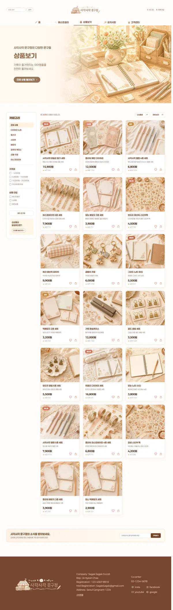
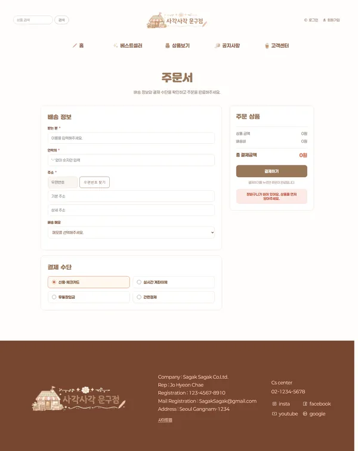
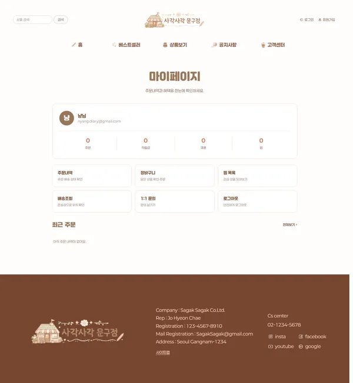

Overview
사각사각, 오늘의 작은 문구
문구 브랜드의 쇼핑 경험 전체를 HTML·CSS·JavaScript로 구현했습니다. 베스트셀러·제품·상세·장바구니·주문·마이페이지까지 이어지는 흐름을 하나의 무드로 설계했습니다.
파스텔 수채 일러스트와 부드러운 톤으로 아기자기하고 따뜻한 브랜드 감성을 살렸습니다.
Problem & Goal
왜 이렇게 만들었나
단순한 상품 나열이 아니라, 브랜드 감성과 구매 흐름을 함께 고려한 문구 쇼핑몰을 목표로 방향을 먼저 정리했습니다.
Design Guide
디자인 가이드
아기자기하고 따뜻한 문구 브랜드 무드를 일관되게 전달하기 위해 키워드부터 컬러·타이포·컴포넌트까지 규칙을 정의해 전 페이지에 반복 적용했습니다.
부드럽고 다정한 문구 감성을 담기 위해 soft · pastel · cozy를 중심 키워드로 잡고 모든 화면의 톤 기준으로 삼았습니다.
크림 베이스에 살구·코랄 포인트를 더해 포근하고 다정한 무드를 구성했습니다. 파스텔 톤으로 제품 일러스트가 부드럽게 어우러지도록 했습니다.
#FDF6F0
#FFFAF6
#E8927C
#CF6B52
#4A3B34
또렷한 타이틀과 읽기 쉬운 본문을 조합해, 브랜드명은 다정하게 · 상품 정보는 명확하게 보이도록 구성했습니다.
둥근 카드, 코랄 CTA 버튼, 파스텔 태그를 반복 사용해 쇼핑몰 전체의 아기자기한 통일감을 유지했습니다.
Screens & Flow
화면 구성 · 흐름
메인 내비게이션 5개 탭 및 상품 상세·장바구니·주문·마이페이지까지 총 26개 화면을 설계·제작했습니다. 아래는 핵심 화면 흐름입니다.



Build
구현 포인트
다중 페이지 이커머스
베스트셀러·제품·상세·장바구니·주문·마이페이지까지 26개 화면을 하나의 흐름으로 연결.
localStorage 상태 관리
사용자·장바구니·찜 상태를 구조화해 저장하고, 페이지를 이동해도 동일하게 유지되도록 구현.
구매자 리뷰 권한
주문 내역과 상품 ID를 매칭해 실제 구매 고객만 리뷰를 작성할 수 있도록 판별.
Swiper & 반응형
Swiper 슬라이더와 반응형 그리드로 PC·모바일 모두 부드러운 상품 탐색을 구현.
Challenges
막혔던 부분 · 해결
PROBLEM백엔드 없이 로그인·장바구니·찜을 어떻게 유지할까?
해결 → localStorage에 사용자·장바구니·찜 상태를 구조화해 저장하고, 26개 페이지 어디서나 동일하게 불러오도록 설계했습니다.
PROBLEM구매하지 않은 사람이 리뷰를 쓰면 안 된다.
해결 → 주문 내역과 상품 ID를 매칭해 ‘구매 고객’만 리뷰를 작성할 수 있도록 권한을 판별했습니다.
PROBLEM고해상도 일러스트 때문에 첫 로딩이 무겁다.
해결 → 전체 이미지를 WebP로 변환해 93MB→7.5MB(92%↓)로 줄여, 반응형에서도 빠르게 로딩되도록 했습니다.
Results
숫자로 보는 작업
Review
돌아보며
localStorage만으로 상태를 관리하며 ‘데이터가 화면 사이를 어떻게 흐르는가’를 직접 설계한 프로젝트였습니다. 과정을 배운 점·아쉬운 점·개선 방향으로 정리했습니다.
배운 점
백엔드 없이도 상태를 구조화해 26개 페이지에서 공유하며, 데이터 흐름을 직접 설계하는 감각을 익혔습니다.
아쉬운 점
localStorage 기반이라 기기 간 동기화나 실제 결제·인증까지는 확장하지 못한 점이 아쉽습니다.
개선 방향
다음엔 실제 백엔드(Supabase 등)와 연동해 인증·주문을 서버로 확장해보고 싶습니다.